Centrillion Point
Старая хата
Жили мы себе жили на St Arvans, и вдруг решил наш хозяин продать хату. Случилось это в конце лета, как раз когда мы уже месяц безуспешно пытались сдать тест на британскость, чтобы нас не выгнали из страны, (а ещё это было в тот же день когда я заступила на новую работу — вот как вредно работать, люди). В общем, момент был подходящий, поскольку голова и так была забита какой-то ерундой. Для лучшего понимания поясню, что хата на St Arvans выглядела примерно так:
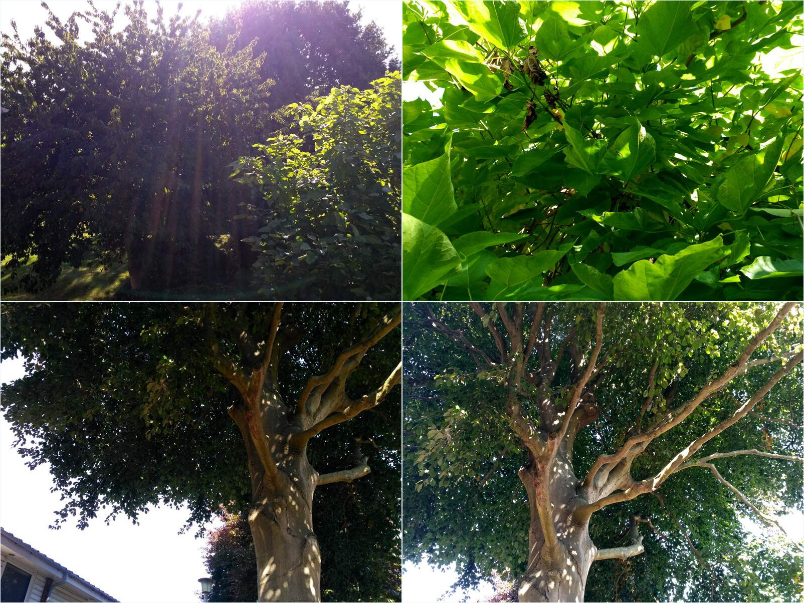
То есть главное в ней было — деревья. В окне зала — гималайская катальпа (это ярко-зелёная с огромными листьями, её обрубили пару лет назад, но она ожила), а в окне спальни, наверное, бук — мощное дерево с резными тёмно-бордовыми листьями, которое зеленеет только осенью (на фотке кажется, что оно зелёное, но на фотках всё не так, как на самом деле). Покидать такую хату нам очень не хотелось, потому что для Лондона это редкость — тут обычное дело вставать утром под вой сирен, а не под пение птиц. В общем, мы понапривыкали к красоте. Но всё же горестного чувства у меня не было — хата и вся прожитая на ней жизнь никуда не делась. Даже хорошо, подвести итог всему сделанному и уехать на пике красоты.
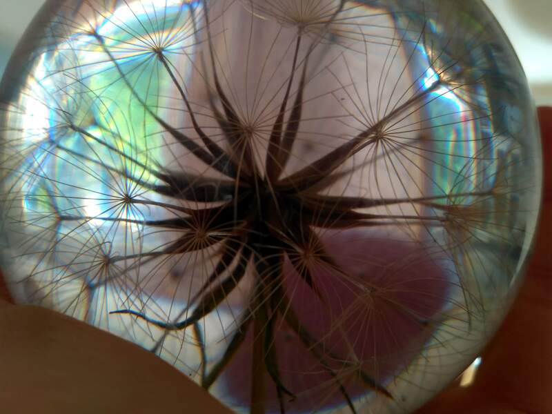
Бетонные коробки
Однако надо было искать новую хату, да побыстрее. Поиск — дело не сложное, но какое-то паразитское. Голова полностью забивается занавесками и квадратными метрами, и что хуже всего — вызывается привыкание. То и дело тянет заглянуть, не появилось ли чего нового на сайте — а там конечно же появилось, но какая-нибудь ерунда, и так оно и продолжается до бесконечности. Драгоценные пара часов после работы превращаются в оргию рекламных объявлений. Кстати, надо отдать должное квартирным сайтам: искать там довольно удобно. Просто сидишь и тыкаешь в цветные флажки на карте, вместо того чтобы руками копипастить каждый адрес в соседнюю вкладку.
Больше всего толковых хат попадается именно в Кройдоне, в котором мы и так жили почти с самого приезда в Лондон. Люди на работе слегка удивляются, когда я говорю им, что живу в Кройдоне — один раз мне со смехом объявили, что у меня уже выработался Кройдонский акцент. Да что они понимают — лучше жить на отшибе и ездить на работу на скоростном поезде со всеми удобствами, чем ютиться в душной квартире в центре Лондона, где вставая с кровати рискуешь попасть ногой в раковину, а спиной при этом зацепить лампу. Мы пытались было искать хату в других районах, но большинство объявлений оказалось всё равно в Кройдоне.
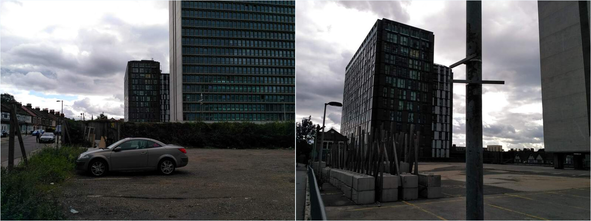
Первая хата, с которой удалось договориться, была на 8-м этаже 12-этажного дома (по меркам Лондона я бы сказала — 12-этажного небоскрёба), стоящего слегка на отшибе от сразу нескольких шумных дорог. В отличие от других объявлений, по телефону мне ответила тётя, а не проклятый автоответчик, и сразу удалось договориться на время, когда прийти посмотреть хату. Дом мы нашли без проблем (минут пятнадцать ходьбы от St Arvans), и потом ещё столько же слонялись взад-вперёд по району, с ужасом косясь на мусорные баки и прочие признаки цивилизации. Был кстати говоря жаркий летний день.
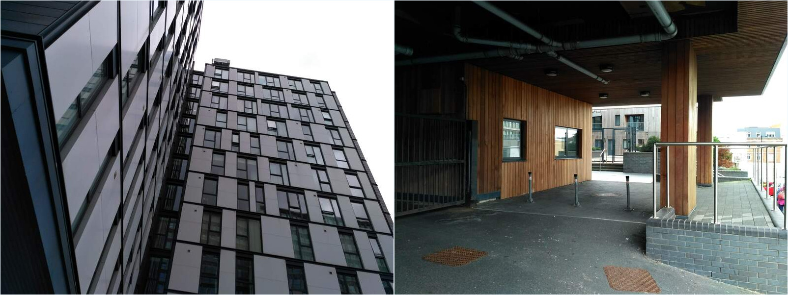
Вход в дом оказался довольно неплохим — какой-то обитый деревяшками предбанник — и пока мы там топтались, из дома вышла тётя и стала ждать посетителей. По виду она была маленькая, улыбчивая, с короткими пушистыми седыми волосами, чёрными глазами и смуглой кожей, представилась “Шерри” и сказала что живёт в Испании — так что в моей голове она теперь испанская леди. Мы прошли через предбанник, и первым делом стали параноидально выяснять про мусор (тут на острове выкинуть что-то куда сложнее, чем купить).
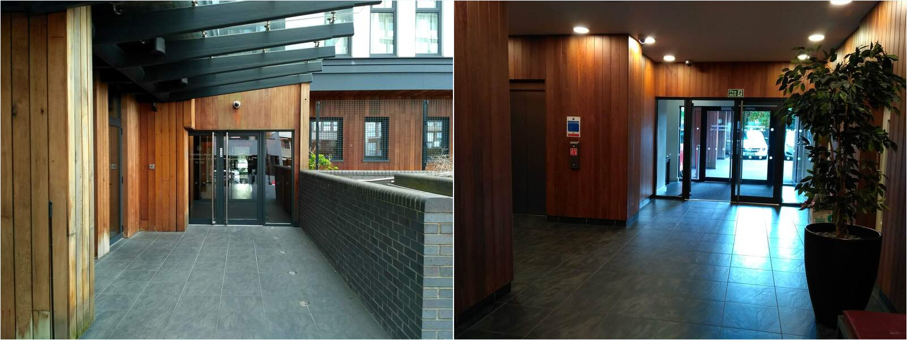
Мы поехали на лифте на 8-й этаж. Собственно, это и зацепило — уже давно в голове засело желание вознестись над бренным Лондонским бытиём и обозревать мусорные баки с высоты. Вид оказался действительно классным. На фотках он уже после того, как мы заполонили хату своими пожитками — но в первый раз я на него почти не смотрела, лихорадочно пытаясь оценить возможные косяки и недоговоры. С виду вроде бы всё было неплохо. Смутил малость стеклопакет с оторванной ручкой, и кухонная столешница, покрытая слоем жира неизвестного происхождения. Ещё смутила какая-то странная полу-химическая вонь: хто его знает, может это восходящие потоки воздуха от мусорных баков и искоренить их нельзя. Но в общем и целом хата попадала в разряд “буржуйские апартаменты отельного типа”, а это всё же не внушает особой безысходности.
Я спросила Шерри, много ли людей в очереди на просмотр хаты (тогда ещё теплилась надежда, что получится остаться на St Arvans, если мы договоримся с новыми хозяевами), на что она сказала, что ещё четыре человека на очереди и скорее всего уже ждут и готовы ворваться в любой момент. Мы распрощались и сказали, что позвоним через пару дней — я была почти уверена, что если мы не согласимся сразу, то кто-то займёт эту хату до нас (хотя четырёх человек на выходе видно не было). Я вообще из тех, на кого действует аргументация вида “сейчас или никогда” — думаю медленно, и временные ограничения сбивают меня с мысли.
В тот день мы так и не перезвонили, но не из-за стальной выдержки, а просто потому что пошли домой, поели, и стало всё по барабану. Но через пару дней окончательно прояснилось, что с St Arvans нас сгоняют, а автоответчики на завтрак, обед и ужин до добра не доведут (особенно когда они сообщают, что “ваш звонок 46-й в очереди, ожидайте”). Мы позвонили Шерри и согласились. СергейАнатольевич ещё успел краем глаза глянуть на какую-то другую хату, совсем близко к St Arvans — но так впечатлился засаленными кафельными подоконниками, что сразу потеплел к жизни на 8-м этаже. Так и вышло, что мы сняли в буквальном смысле первую попавшуюся хату.
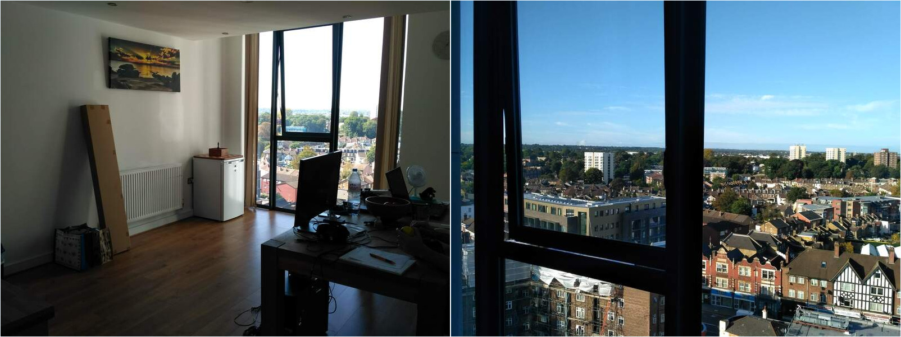
Из окна зала (он же — кухня) видны все три больших дома в округе. Ну ладно, ладно, я же программист — считать не умею. :D
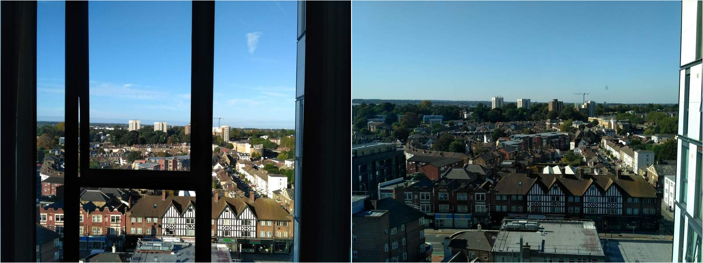
С нами переехал наш любимый дубовый стол и стулья, и конечно самое главное — компы. Кстати, по фотке со столом можно понять, что на новой хате много места: стол в длину ни много ни мало 180 см, а здесь он кажется довольно маленьким. Также переехала коллекция шишек и прочих чудес природы. Не все они пережили переезд, но зато добавился зелёный стрюк от катальпы — СергейАнатольевич позаимствовал на прощанье.

Вот так выглядит кухня. А справа — вид из окон зала вниз, на внутренний двор с мусорками и стоянкой.
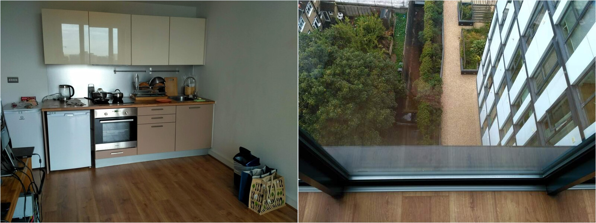
В коридоре висит зеркало, в котором отражается зал. Слева от него вторая комната, спальня и по совместительству спортзал для зарядки — теперь хоть есть где отростками помахать, не рискуя снести лампу или хряснуться об дверь. :) Кстати, мы размышляли, куда делась вторая зеркальная дверь от шкафа (её просто нет). А потом как-то с утра делали зарядку и речь зашла про баскетбольные мячи — видимо, предыдущие жильцы расколотили дверь мячом.
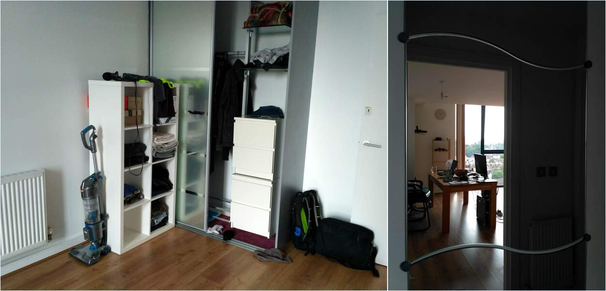
А вот окно спальни, оно более узкое и глубоко посаженное (утопленное в стене). Спальный матрас мы кинули прямо перед окном, чтобы смотреть засыпая на огоньки.
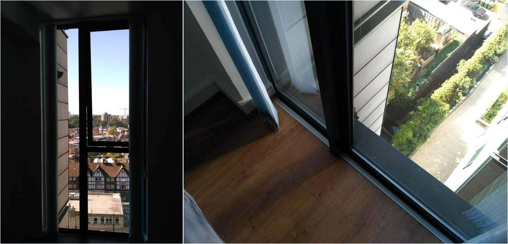
Справа от окна — загон для вещей, но сфоткать всё сразу не представляется возможным из-за дикой засветки, поэтому фотка сшита из кусков.
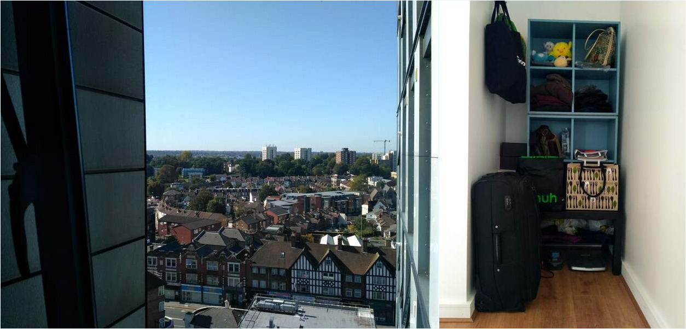
К вечеру приходит солнце, и всё озаряется.
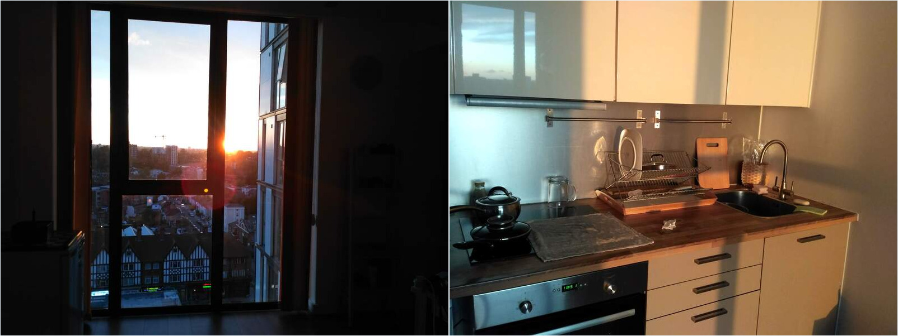
Я пыталась сфоткать закат много раз — каждый день казалось, что он лучше предыдущего. По фоткам конечно непонятно, как оно на самом деле. Но очень красиво. :)
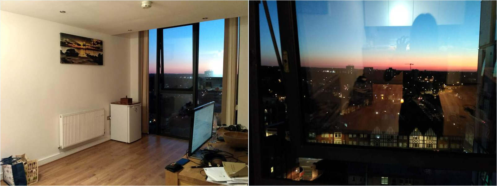
Иногда закат просто дичайше яркий.
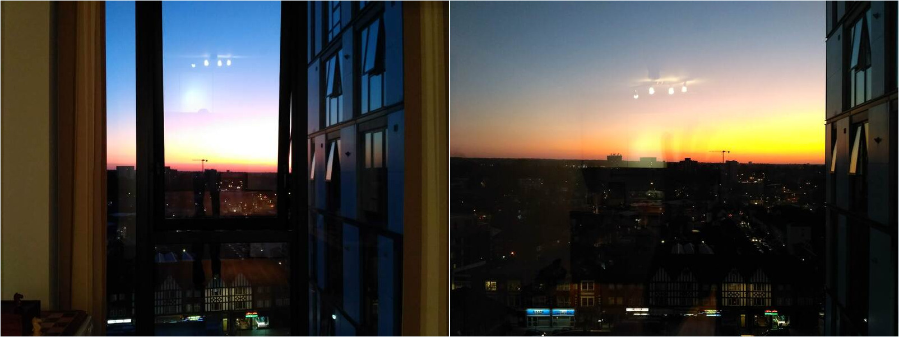
А потом небо остывает, и видны ночные огни. Тёмный город Лондон. :)
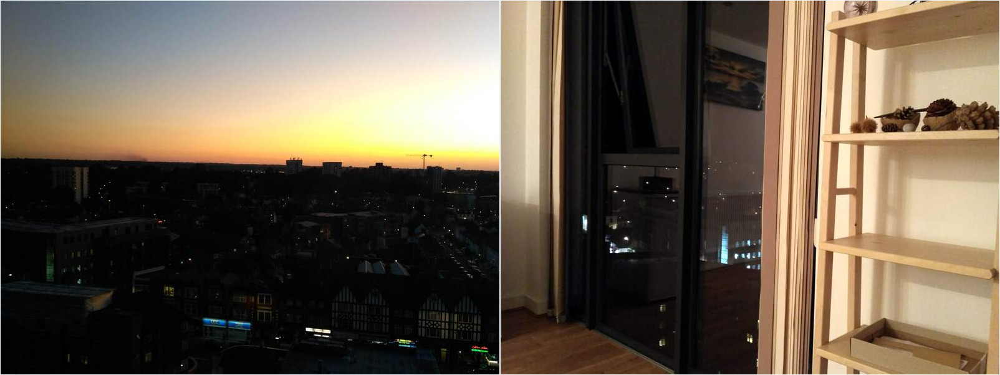
Новая хата называется Centrillion Point. Такие дела. Пора спать!
comments powered by Disqus